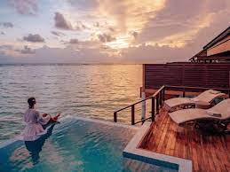

1. Treat yourself to a spa day Even when you’re on a modest budget, it’s wonderful to indulge in an extra dose of R. Expect to pay at least 1,000 MVR ($65 USD) for a 30-minute massage. Some of the larger hotels offer discounts for early-morning/late evening bookings so inquire with your hotel, Airbnb host, or guesthouse to find out about deals.
2. Go fishing Seafood is an integral part of Maldivian cuisine. Most hotels and guesthouses rent poles, bait, and provide a guide for around 775 MVR ($50 USD). Skipjack and yellowfin tuna, wahoo, mahi-mahi, bigeye scad, and mackerel scad are all commonly found here. If you’re an experienced angler, some of the best game fishing in the world can be done here. Expect to pay at least 3,000 MVR ($200 USD) for a half-day shared charter.
3. Snorkel in the Baa Atoll The Baa Atoll is a 1,200-square-kilometer UNESCO Biosphere Reserve brimming with manta rays and whale sharks. On a clear day, you can see them swarming below the surface. It’s only a five-minute boat ride from Dharavandhoo Island but visiting the area is strictly regulated and there is an 80 person capacity so as not to disrupt the precious ecosystem. admission is 310 MVR ($20 USD), which gives you 45 minutes in the water and a certified snorkel guide. Profits go towards the Baa Atoll Conservation Fund.
4. Visit the National Art Gallery Established in 1999, there’s no permanent gallery here so be sure to check the website in advance as the space will be empty if there is no visiting exhibition on display. The temporary exhibitions at the gallery, which range from traditional paintings and local textiles to international modern artists, is well worth a visit.
6. Visit the Male Fish Market Come here and catch a glimpse of Maldivians living out their daily routine in the commercial center of Male. Select a fish (if you can muster your way through a purchase as most fishermen don’t speak English) and have it cooked at your guesthouse for dinner.
7. Wash up on a sandbank These tiny mounds of sand in the middle of the Indian Ocean are the closest you’ll get to feeling like you’re on your own private island. Private trips can be arranged to any one of the hundred different banks dotted around the islands (many of which are attached to/affiliated with resorts) for 775 MVR ($50 USD) a person. Tours usually last 2-3 hours. 8. Skip Maafushi Maafushi, once a sleepy little island, is now the victim of uncontrolled development. There are hotels going up left and right, boats making frequent trips to Malé to pick up tour groups, and an increasingly-crowded and overbuilt beach. The few restaurants on the island cater mostly to tourists and outside the area cleaned up for visitors, it’s one trash-covered dump. Skip it! 